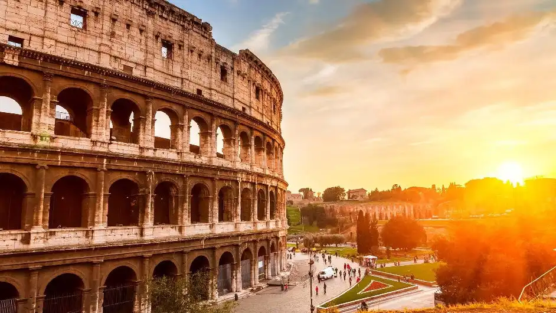

Рим е столицата на Италия и област Лацио. Разположен е на реките Тибър и Аниене. Бил е столица на Римската империя, най-могъщата, голяма и най-дълго просъществувалата империя в класическата западна цивилизация. Ватиканът, анклав в Рим, е суверенна държава, седалище на Римската католическа църква и папата.
Рим е най-големият град в Италия и един от най-големите европейски градове с площ от 1287,36 кв. км. Предградията му достигат до Тиренско море. В границите на града населението е 2,8 милиона жители (към 31 декември 2019 г.); почти 4,4 милиона живеят в района на Рим.
Градът съществува от 2800 години, като е бил средище на Древен Рим, по-късно на Папската област, Италианското кралство и Италианската република (съвременна Италия). Рим е известен още като la Città Eterna (от итал. „Вечният град“) и l' Urbe (от латински: „Градът“).
Историята на Рим
Съгласно базирани на археологическите свидетелства хипотези градът се формира постепенно на основата на скотовъдски селища в горната част на хълма Палатин. В същото време датираща от древността легенда разказва, че градът е основан на 21 април 753 година пр.н.е. от братята Ромул и Рем, отгледани от вълчица синове на весталката Рея Силвия и бога Марс. Друга легенда извежда произхода на основателите на Рим от Еней, герой, избягал от победената Троя след Троянската война.
В Античността, градската територия на Рим включва Седемте хълма по левия бряг на река Тибър. Първоначално по шест от тях има селища на племената латини и сабини, а седмият, Целий, е заселен с етруски. Около 6 век пр.н.е. низината между хълмовете е превърната в общ пазарен площад – форум. На хълма Капитолий са построени крепост и храм на Юпитер, и той става военен и религиозен център на града.
Първоначалното селище се превръща в столица на Римското царство, в края на 6 век пр.н.е. – на Римската република, а през 1 век пр.н.е. – на Римската империя. Успехът на Римската държава се дължи на съчетание от военни завоевания, търговска хегемония и избирателно асимилиране на съседните народи, най-вече на италийци, етруски и гърци. През първите столетия от съществуването на Рим негов основен съперник са етруските, а през 386 година пр.н.е. градът за кратко е завзет от галите. След тази криза Рим се стабилизира и през 3 век вече е доминираща сила на Апенинския полуостров, след като подчинява сабините, етруските, самнитите и повечето гръцки колонии във Велика Гърция. В последвалите Пунически войни Рим успява да се наложи и над средиземноморската империя на Картаген, като за пръв път установява контрол над отвъдморски владения – Сицилия, Сардиния и Корсика, Испания.
Колизеум
Ватикански музеи
Траянова колона
Пантеон
Дворец Дория
Фонтан ди Треви
Площад Венеция
Площад Навона
Забележителностите

This free script provided by
JavaScript
Kit
Население по години
| Година | Население |
|---|---|
| 1861г | 194 500 |
| 1901г | 518 917 |
| 1931г | 930 926 |
| 1951г | 1 651 754 |
| 1971г | 2 781 993 |
| 1981г | 2 840 259 |
| 1991г | 2 775 250 |
| 2011г | 2 617 175 |
| 2017г | 2 876 051 |